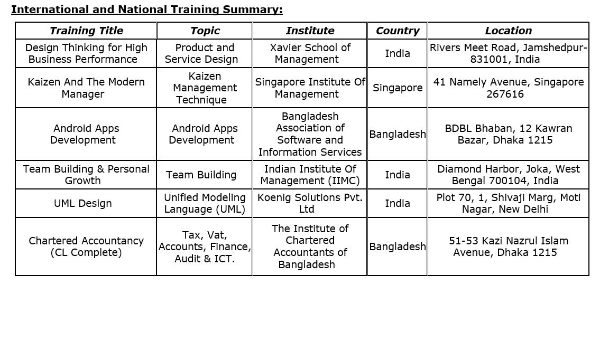
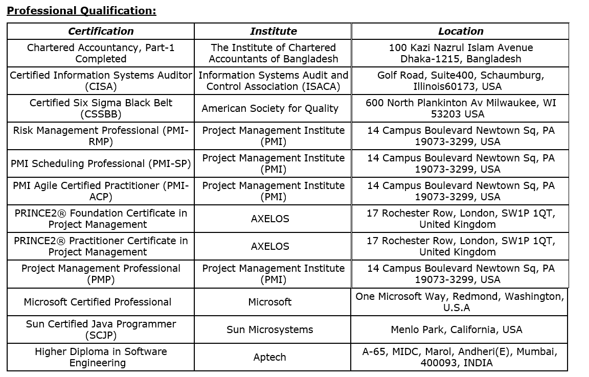

Address:
House 138, Road 3, Block A, Level 5, Flat B6
Niketon, Gulshan-1, Dhaka 1212, Bangladesh
Cell Phone No: 8801711110145
Email: samsuddin.rana@gmail.com
With over two decades of experience managing diverse departments, mission-critical investigations, and complex projects, I have a proven track record of consistently delivering exceptional results within strict time, budget, and quality constraints while ensuring the productive engagement of stakeholders. My proficiency lies in all aspects of project management, operational risk management, and system audit, including planning, execution, monitoring, and closure, as well as in credit risk management, communication, and innovative problem-solving. I am deeply committed to informing myself about the latest technologies and methodologies to optimize outcomes and streamline efficiency. I am eager to tackle any challenging and rewarding opportunity that can leverage my skills and contribute to the organization's success.
I possess extensive experience working in the Manufacturing and Financial Services sectors. Throughout my career, I have honed a diverse skill set: Project Management, Risk Management, Operation Management, Information System Audit, Process Improvement, Credit Risk Management, Quality Management, Software Implementation, Customized Tool Development, and Training thousands of Project Managers.
A curated training session on project risk management was delivered to Akij Venture Limited a leading manufacturing concern, aiming to enhance its ability to anticipate and mitigate risks throughout the project lifecycle. The program focused on identifying potential risks during planning, execution, and closing phases, including resource constraints, budget deviations, and technology-related uncertainties. Participants were introduced to proven frameworks such as risk registers, probability-impact matrices, and contingency planning techniques. By integrating case studies and interactive group exercises, the training encouraged critical thinking and proactive decision-making. This initiative ultimately supports more predictable project outcomes, strengthens stakeholder confidence, and aligns with the company’s broader commitment to operational excellence and continuous improvement.
Delivering training on Project Risk Management to participants from the Prime Minister's Office of Bangladesh was an extraordinary experience, brimming with impactful learning and meaningful engagement. The session brought together some of the nation's sharpest minds, committed to mastering the art of identifying, analyzing, and mitigating risks in high-stakes projects. The exchange of ideas was vibrant, as participants shared unique challenges and insights rooted in their significant roles within national governance. Crafting the training to address both theoretical frameworks and practical applications ensured a well-rounded learning experience, empowering attendees to make informed, proactive decisions. It was truly inspiring to witness the dedication of these participants, eager to elevate their expertise and drive Bangladesh's development with resilience and strategic foresight.
Facilitating the Project Management training session for Bangladesh's Military Engineer Services (MES) was an enriching experience. It brought together disciplined and skilled professionals committed to mastering efficient project planning and execution. The session effectively blended theory and practice, focusing on the unique challenges of large-scale infrastructure projects. Witnessing their drive to align with global best practices and enhance their project delivery skills was inspiring. This engagement showcased MES's dedication to professional growth and its critical role in national development.
Delivering Project Management training focused on resource management to participants from Golden Harvest InfoTech Ltd (GHIT) was an incredibly insightful and rewarding experience. The training brought together a group of dynamic professionals, deeply immersed in the fast-paced realm of information technology, all eager to refine their skills in optimizing resources for project success. The sessions were designed to blend strategic frameworks with practical applications, fostering engaging discussions on effectively allocating manpower, time, and budget within IT-driven projects. Witnessing their enthusiasm and creativity in applying resource management principles to real-world scenarios was genuinely inspiring. The exchange of ideas underscored GHIT's commitment to fostering innovation and efficiency, empowering their teams to tackle complex challenges with precision and foresight. This experience reflected their dedication to excellence in project execution and their drive to remain at the forefront of the IT industry.
Facilitating the training session on Construction Project Management with a focus on timely delivery for participants from EDOTCO Bangladesh Co Ltd was an inspiring and impactful experience. The session brought together a group of highly skilled professionals who are directly involved in driving critical infrastructure projects, each determined to refine their expertise in delivering projects on schedule. The training emphasized practical strategies for overcoming challenges such as resource constraints, risk mitigation, and time management, creating an interactive and enriching environment. The participants' eagerness to engage in hands-on exercises and share real-life project scenarios made the experience even more dynamic and rewarding. Witnessing their dedication to enhancing efficiency and delivering high-quality results underscored EDOTCO's commitment to operational excellence and industry leadership. It was a privilege to contribute to their journey of professional growth and to help solidify their ability to meet ambitious project timelines with confidence and precision.
Delivering the Project Management training program for participants from prominent software firms in Bangladesh under the World Bank-funded BASIS-SEIP project was an inspiring and transformative experience. The training was meticulously designed to shape participants into professional project managers equipped with the skills and knowledge to excel in a highly competitive and dynamic tech industry. Engaging with bright, driven professionals eager to adopt the best global practices in project planning, execution, and resource management made the sessions profoundly rewarding. The curriculum not only covered core principles but also delved into practical applications, ensuring participants could tackle real-world challenges with confidence and precision. Witnessing their growth throughout the program underscored the transformative potential of capacity-building initiatives. This experience reinforced the pivotal role such training plays in fostering a new generation of visionary leaders, propelling Bangladesh’s IT sector toward a future of innovation and excellence.
Serving as an enlisted trainer for TÜV SÜD Bangladesh to deliver Project Management training to professionals from various manufacturing organizations has been an immensely fulfilling and dynamic experience. The diversity of participants, representing sectors ranging from textiles to heavy industries, brought a rich blend of insights and challenges to the sessions. Crafting the training to cater to the unique operational demands of manufacturing, focusing on streamlining processes, optimizing resources, and delivering projects on time—made the experience both rewarding and impactful. The participants' enthusiasm and commitment to learning, combined with their drive to implement global best practices, created an engaging and collaborative environment.
Facilitating the Project Management training session for the talented professionals of BRAC IT Services Limited (biTS) was a profoundly enriching and dynamic experience. The participants, deeply immersed in the fast-paced IT sector, brought unparalleled energy and a wealth of real-world challenges to the discussions. The training focused on equipping them with modern tools and strategies to enhance project planning, execution, and delivery, tailored specifically to the complexities of technology-driven initiatives. Their enthusiasm and commitment to learning were truly inspiring, as they eagerly applied advanced methodologies to optimize workflows and tackle bottlenecks. This collaboration highlighted biTS's dedication to empowering its team with the best global practices and fostering a culture of innovation and operational excellence. Being part of this journey, where theoretical insights met practical application, was both rewarding and a testament to the transformative power of effective project management training.
With over 10,000 hours of dedicated training in Project Management Professional (PMP) certification exam preparation over the past decade, I have guided thousands of professionals across diverse industries. From the colossal Padma Bridge and Matarbari Coal-Fired Power Project to the intricate networks of metro rail construction, as well as the dynamic domains of banks, financial institutions (FIs), and mobile financial services (MFS), I have tailored my expertise to meet the unique challenges of each sector. My approach combines real-world project scenarios with the precise structure of the PMP framework, ensuring that participants not only ace their exams but also translate their knowledge into impactful project execution. It's been immensely rewarding to contribute to shaping skilled professionals who spearhead transformative projects across Bangladesh and beyond.
The implementation of the eKYC (Electronic Know Your Customer) project at IPDC Finance PLC marks a transformative leap in compliance and operational efficiency, born from regulatory requirements. This initiative seamlessly aligns technology with governance, enabling the institution to adhere to stringent standards while enhancing customer experience. By automating and digitizing the KYC process, IPDC Finance is fostering a transparent and secure financial ecosystem, minimizing human errors, and accelerating customer onboarding. The eKYC project is not just a regulatory fulfillment but also a strategic move to embrace innovation, establishing IPDC Finance as a forward-thinking entity committed to integrity and customer-centricity. This endeavor reflects a proactive approach to meeting regulatory mandates while setting new benchmarks in the financial services landscape.
The development of the CBS (Core Banking System) project "ULTRA" at United Finance PLC represents a groundbreaking initiative rooted in the vital need for enhanced financial record keeping and reporting. This advanced system promises to revolutionize the organization's financial operations by introducing precision, speed, and reliability into data management processes. "ULTRA" is more than just a technological upgrade; it is a strategic framework designed to streamline reporting, ensure compliance, and empower decision-making with accurate, real-time insights. By addressing the complexities of financial management head-on, United Finance PLC positions itself as a forward-thinking institution dedicated to operational excellence and innovative solutions. This project exemplifies how technology can transform traditional systems into dynamic tools for growth and accountability.
The organization-wide implementation of the fixed assets management system at United Finance PLC represents a pioneering initiative driven by a critical need for meticulous record-keeping, precise depreciation calculations, and comprehensive reporting. This project marks a significant strategic milestone, fundamentally transforming the company’s approach to tracking and managing its assets across a variety of operations. By harnessing advanced technology, the system guarantees transparency and accuracy, enabling United Finance to enhance asset utilization, ensure compliance, and streamline financial reporting with exceptional efficiency.
The organization-wide launch of the BEFTN (Bangladesh Electronic Funds Transfer Network) project at United Finance PLC heralds a new era of innovation in banking transaction settlements. This transformative initiative, rooted in the adoption of a modernized financial system, streamlines the process of fund transfers, ensuring speed, security, and accuracy like never before. BEFTN enables seamless electronic clearing, replacing traditional paper-based transactions, and positions United Finance as a leader in embracing cutting-edge technology to enhance customer satisfaction. This initiative is not merely a technological upgrade; it is a strategic leap towards operational excellence, reinforcing trust and transparency in every financial interaction. With this launch, United Finance PLC sets a benchmark in delivering superior banking solutions while aligning with evolving industry standards.
The launch of the Home Loan product by United Finance PLC is a bold and visionary step toward securing strategic positioning in the competitive financial market. This initiative symbolizes the company's commitment to empowering customers with accessible, tailored financing solutions that fulfill the dream of owning a home. By venturing into the home loan segment, United Finance diversifies its offerings and strengthens its presence in a lucrative market, setting the stage for sustainable growth and customer loyalty. The project integrates innovation with customer-centricity, leveraging streamlined processes and competitive rates to deliver unparalleled value. This launch serves as a testament to United Finance PLC's dedication to staying ahead of market trends and creating meaningful financial opportunities for its clientele.
The project to streamline consumable items inventory and develop an innovative system for managing these assets at United Finance PLC is pivotal in enhancing operational efficiency and safeguarding company resources. This initiative is driven by the critical need to optimize inventory tracking, ensure accountability, and reduce unnecessary costs associated with consumable items. By implementing this robust system, United Finance is protecting its assets and fostering a culture of precision and sustainability. The project introduces advanced tools and processes to eliminate inefficiencies, minimize waste, and provide transparent reporting, laying the groundwork for cost reduction and better resource utilization. It is a testament to United Finance PLC’s commitment to operational excellence, reflecting a forward-thinking approach to asset management and long-term financial sustainability.
Implementing a pending documents management system at United Finance PLC is vital to improved compliance and operational excellence. This initiative aims to effectively track and manage pending documentation, ensuring all regulatory requirements are met. By adopting a technology-driven system, United Finance enables its teams to maintain accurate records, streamline processes, and enhance accountability. This project promotes compliance, strengthens stakeholder trust, and minimizes risks related to incomplete documentation, underscoring the company's commitment to precision and long-term success.
The implementation of SAP at Gemcon Group marks a monumental leap in the organization's journey of transformation and innovation. This project, born from the vision to revolutionize operational processes and unify diverse business functions, introduces a cutting-edge enterprise resource planning system to ensure seamless integration, transparency, and efficiency. SAP empowers Gemcon Group with real-time insights, enabling smarter decision-making and optimizing workflows across all levels. Far beyond a mere technological upgrade, this initiative is a strategic blueprint for sustained growth, fostering synergy between departments and unlocking new potential for operational excellence. With this bold step, Gemcon Group positions itself as a forward-thinking leader, ready to embrace the complexities of modern business dynamics while staying true to its commitment to excellence and innovation.
The digitization of vast land data, covering an impressive 6,000 acres of land under 4,800 deeds, represents a cornerstone in Gemcon Group's ambitious journey toward digital transformation. This monumental project is more than a technological endeavor—an innovative stride to streamline and preserve vital records, ensuring precision, accessibility, and security in land management. By transitioning from traditional documentation to an advanced digital system, Gemcon Group is poised to unlock unparalleled efficiency in data handling, empowering strategic decision-making with accurate and readily available insights. This initiative not only protects the integrity of the organization's assets but also sets a precedent for forward-thinking leadership in property management. It's a bold statement of Gemcon Group's commitment to harnessing technology to drive growth and establish itself as a model of organizational excellence in the digital age.
The project to organize and digitize the vast inventory of the jute mill at Gemcon Group (GemJute) marks a decisive step toward achieving unparalleled asset control and operational efficiency. With an extensive inventory to manage, this initiative transitions from traditional methods to a dynamic digital platform, ensuring precision, transparency, and accountability in inventory tracking. By harnessing advanced technology, GemJute can streamline processes, reduce inefficiencies, and empower data-driven decision-making, safeguarding valuable resources while optimizing their utilization. This transformation reflects Gemcon Group's commitment to innovation, sustainability, and leadership within the industry as it redefines asset management practices for long-term growth and resilience.
 